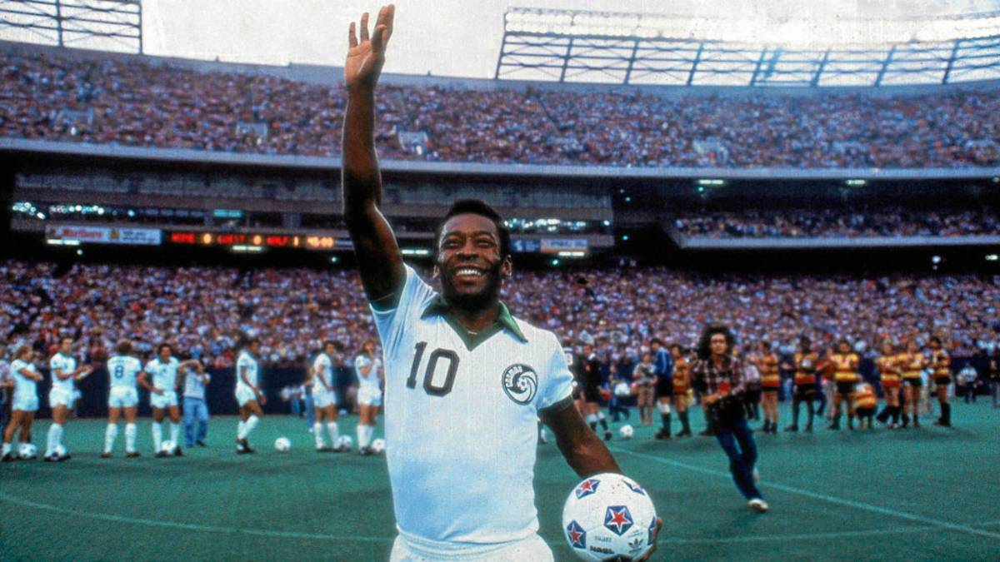

Leyendas en la MLS
-
Pele
Uno de los acontecimientos históricos en el fútbol estadounidense se dio en 1975, cuando Edson Arantes do Nascimiento, mejor conocido como Pelé, hizo su arribo al New York Cosmos de la entonces naciente National American Soccer League, que concretó la llegada del que para muchos, es el mejor futbolista de la historia.
-
David Beckham

El 1 de julio de 2007, en medio de gran controversia, Beckham deja el Real Madrid y ficha por el equipo estadounidense de Los Angeles Galaxy bajo la figura de jugador franquicia en la MLS. Se cree que esta decisión responde a fines más lucrativos que estrictamente deportivos, ya que Beckham sería consciente de su futuro declive físico y desearía exprimir al máximo su potencial publicitario en el mercado de los Estados Unidos.
-
Andrea Pirlo
El 6 de julio de 2015, luego de quedar libre, Pirlo fichó por el New York City F. C. de Estados Unidos y se convirtió en el tercer jugador franquicia, junto con David Villa y Frank Lampard. Cobró ocho millones de dólares por temporada, por lo cual fue el futbolista mejor pagado de la Major League Soccer.
-
Thierry Henry
El 14 de julio de 2010 fue contratado por los New York Red Bulls de la MLS de Estados Unidos por cuatro años, junto a su compañero del Barcelona Rafa Márquez. Tití se convirtió en el jugador mejor pagado de la MLS (5,6 millones US$). En los Red Bulls, consigue unos 14 goles en la primera temporada, demostrando un compromiso absoluto con el club y liga, ayudándola a crecer con su aporte social y económico.